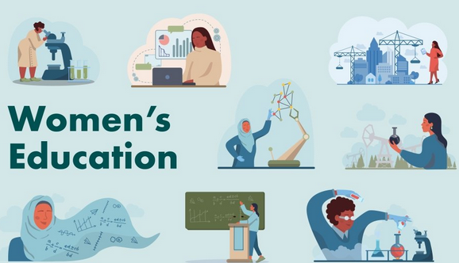

Women's Rights
Right to education

As per the 2011 Census, the total literacy rate in India stands at 74.00 per
cent and the rate of literacy among women is 65.46 per cent. The percentage of
female literacy in the country was 54.16 per cent in 2001.
-
Kasturba Gandhi Balika Vidyalaya
-
This scheme was launched in July,
2004, to provide education to girls at primary level. It is primarily for the
underprivileged and rural areas where literacy level for girls is very low.
The schools that were set up have 100% reservation: 75% for backward
class and 25% for BPL (below Poverty line) girls.
-
Beti Bachao, Beti Padhao
- This is newly announced Scheme of the Govt.
of India for enhancing girls’ education in India.
-
UDAAN
- Giving wings to Girl Students - The Scheme is dedicated to the
development of girl child education, so as to promote the admission of girl
students. The aim is to address the teaching gap between school education
and engineering entrance examinations. It seeks to enhance the enrolment of
girl students in prestigious technical education institutions through
incentives & academic support.